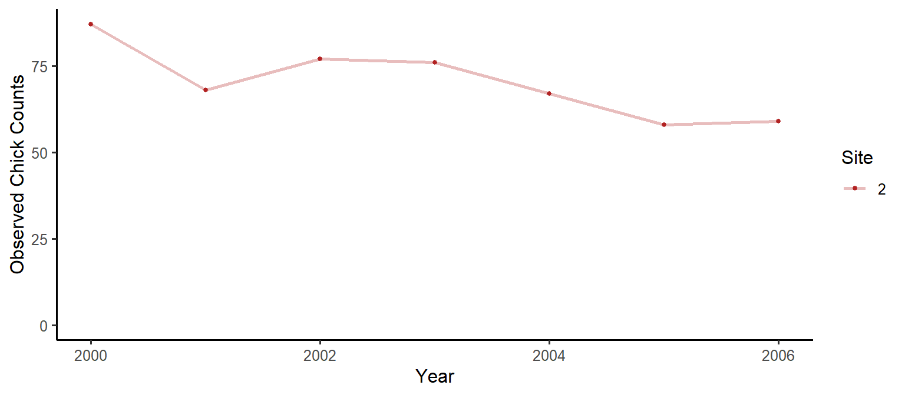
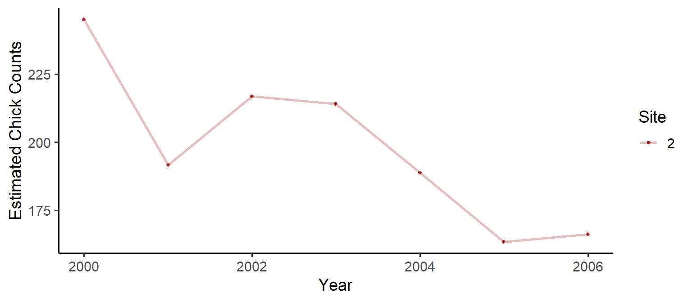

Estimating population abundance for replicated counts data is a computationally intensive problem. N-mixture models are used extensively in ecology to estimate population sizes, and to ascertain under-detection rates. Here I will discuss my new R package: quickNmix, which implements asymptotic solutions to the N-mixture likelihood function. The asymptotic solutions admit faster computation of the likelihood function, and the addition of parallel computing to the package can further increase computing speeds. The package is part of my manuscript in preparation: “Parker, M.R.P., Elliott, L., Cowen, L.L.E., Cao, J. (2021). Asymptotic solutions for N-mixture models with count data [Manuscript in preparation]. Department of Statistics and Actuarial Sciences, Simon Fraser University.”.
The package quickNmix is my first package available on CRAN, so you can install it easily:
install.packages("quickNmix")
library("quickNmix")We will also use the tidyverse for data prep:
library("tidyverse")We will use tictoc for timing:
library("tictoc")We will use the Ancient Murrelet chick count data from quickNmix (this data was collected by the Laskeek Bay Conservation Society). We will look at a single site model, with no covariates.
dat = anmu[2,11:17]
dat## [1] 87 68 77 76 67 58 59Let’s have a look at the data:
dat_df = data.frame(Counts=dat, Year=2000:2006, Site=as.factor(rep(c(2), each=7)))
plot1 = ggplot(data=dat_df) +
geom_line(aes(x=Year, y=Counts, colour=Site), size=1, na.rm = T, alpha=0.3) +
geom_point(aes(x=Year, y=Counts, colour=Site), size=1, na.rm = T) +
scale_colour_manual(values = c("firebrick", "dodgerblue", "seagreen")) +
scale_y_continuous(limits=c(0,NA)) +
theme_classic(base_size = 12) +
ylab("Observed Chick Counts")
plot1
Okay, we have our data ready. Let’s run a basic model:
doParallel::registerDoParallel(cores = 2) # optional, don't run this if you want to use a single processor
# let's use the tictoc package for timing:
tictoc::tic()
mod_anmu = fitNmix(nit = dat,
K = 300) # K is the upper bound on the number of chicks## Warning in fitNmix(nit = dat, K = 300): WARNING: converting vector nit to a
## matrix with one row.tictoc::toc()## 188.18 sec elapsedThe output from fitNmix has three categories:
names(mod_anmu)## [1] "optim_results" "model_results" "model_data"If you need to look at the output from the optimization algorithm, you do so easily using optim_results:
mod_anmu$optim_results## $par
## B_l_0 B_g_0 B_o_0 B_p_0
## 5.4594886 1.8529432 2.3371182 -0.5971375
##
## $value
## [1] 22.68542
##
## $counts
## function gradient
## 50 28
##
## $convergence
## [1] 0
##
## $message
## NULLThis tells you if there were convergence issues, how many function evaluations were performed, and so on. However, for more human-readable output, you can check out model_results, which includes several useful quantities:
mod_anmu$model_results## $NLL
## [1] 22.68542
##
## $AIC
## [1] 53.37084
##
## $estimate_matrices
## $estimate_matrices$lambda
## [,1]
## [1,] 234.9772
##
## $estimate_matrices$gamma
## [,1] [,2] [,3] [,4] [,5] [,6] [,7]
## [1,] 6.378566 6.378566 6.378566 6.378566 6.378566 6.378566 6.378566
##
## $estimate_matrices$omega
## [,1] [,2] [,3] [,4] [,5] [,6] [,7]
## [1,] 0.9119049 0.9119049 0.9119049 0.9119049 0.9119049 0.9119049 0.9119049
##
## $estimate_matrices$pdet
## [,1] [,2] [,3] [,4] [,5] [,6] [,7]
## [1,] 0.3549989 0.3549989 0.3549989 0.3549989 0.3549989 0.3549989 0.3549989Here you can see matrices of parameter estimates calculated for each site and time, you can see the value of the negative log likelihood (NLL), and you can see the Akaike Information Criterion (AIC) for the fitted model (which can be used to compare nested models when selecting/rejecting covariates).
A common method of getting abundance estimates is to divide the observed counts by the estimated probability of detection:
Nhat = dat/mod_anmu$model_results$estimate_matrices$pdetdat_df = data.frame(Counts=c(Nhat[1,]), Year=2000:2006, Site=as.factor(rep(c(2), each=7)))
plot1 = ggplot(data=dat_df) +
geom_line(aes(x=Year, y=Counts, colour=Site), size=1, na.rm = T, alpha=0.3) +
geom_point(aes(x=Year, y=Counts, colour=Site), size=1, na.rm = T) +
scale_color_manual(values=c("firebrick")) +
theme_classic(base_size = 14) +
ylab("Estimated Chick Counts")
plot1
If you need to recall any of the information used in model fitting (including to see what default values were used), you can check out model_data:
mod_anmu$model_data## $K
## [1] 300
##
## $nit
## [,1] [,2] [,3] [,4] [,5] [,6] [,7]
## [1,] 87 68 77 76 67 58 59
##
## $l_s_c
## NULL
##
## $g_s_c
## NULL
##
## $g_t_c
## NULL
##
## $o_s_c
## NULL
##
## $o_t_c
## NULL
##
## $p_s_c
## NULL
##
## $p_t_c
## NULL
##
## $SMALL_a_CORRECTION
## [1] FALSEdat = anmu[1:3,1:6] # three sites, six sampling occasions
measure1 = c(0.12, 0.32, 0.13) # some data collected per site
# minimal example (indicator variables)
# with site 3 lambda differing from sites 1 and 2:
mod_anmu = fitNmix(nit = dat,
K = 300,
l_s_c = list(site3=c(0,0,1)))
# minimal example (indicator variables)
# with lambda differing for all three sites:
mod_anmu = fitNmix(nit = dat,
K = 300,
l_s_c = list(site2=c(0,1,0), site3=c(0,0,1)))
# minimal example (continuous covariate)
# with lambda depending on measure1:
mod_anmu = fitNmix(nit = dat,
K = 300,
l_s_c = list(cov1=measure1))
# minimal example (several covariates)
# with lambda depending on site,
# with gamma and omega depending on measure1,
# with detection probability depending on site:
mod_anmu = fitNmix(nit = dat,
K = 300,
l_s_c = list(site2=c(0,1,0), site3=c(0,0,1)),
g_s_c = list(cov1=measure1),
o_s_c = list(cov1=measure1),
p_s_c = list(site2=c(0,1,0), site3=c(0,0,1)))dat = anmu[1:3,1:6] # two sites, six sampling occasions
measure2 = c(-0.959,0.710,0.317,0.041,1.624,-0.571,0.464) # some data collected per year
# minimal example (indicator variables)
# with gamma differing years 3 and 5:
mod_anmu = fitNmix(nit = dat,
K = 300,
g_t_c = list(years3and6=c(0,0,1,0,1,0)))
# minimal example (continuous covariate)
# with omega depending on measure2:
mod_anmu = fitNmix(nit = dat,
K = 300,
o_t_c = list(cov2=measure2))# minimal example (saving checkpoint file)
mod_anmu = fitNmix(nit = dat,
K = 300,
outfile = "checkpoint.csv")The R package quickNmix provides a quick and easy interface for fitting asymptotic N-mixture models, allowing the use of parameter covariates which can be site or time varying. The package also allows for easy parallel processing when multiple cores are available.